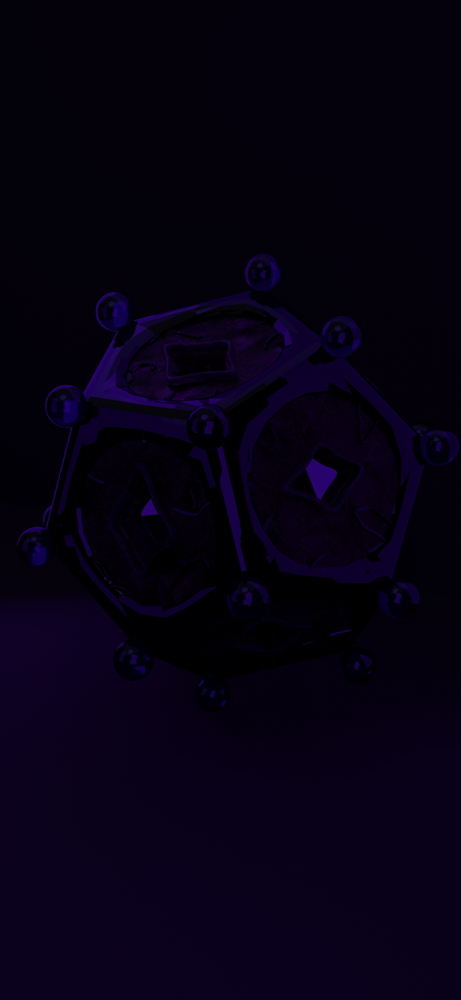

Sobre el proyecto
Este proyecto es una historia diseñada para integrarse a la realidad abstracta de un objeto que ha almacenado la memoria del tiempo y el espacio, parte de apelar al compromiso del usuario con respecto a pequeñas metas que funcionan como llaves para llegar al interior de la historia y los secretos que puede revelar el Tutúmula, explorando factores como el anhelo y el asumir que la recompensa siempre es algo que está cargado de gozo. Al contrario de una historia frecuente, aquí el atravesar la ruta y completar los objetivos estructuras poco a poco, demostrando así que es digno de recibir el secreto que el artefacto puede mostrar ante la subjetividad de los ojos humanos, Y conservar el secreto o revelarlo … pues una o la otra tienen consecuencias que solo él puede controlar partiendo de la teoría que el tiempo es cíclico y si no se conoce la historia, se está condenado a repetirla
El artefacto tiene un origen que remonta a las profundidades curiosas del cosmos, una roca preciosa que lleva muchos años en preparación. Se creó de la amalgama de elementos químicos naturales encontrados en el planeta Tierra y de algunos compuestos ofrecidos por los visitantes interestelares como los meteoritos o los cometas.
